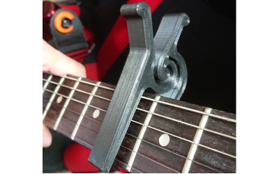
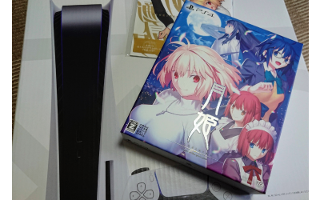
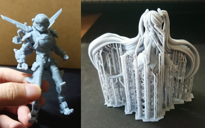
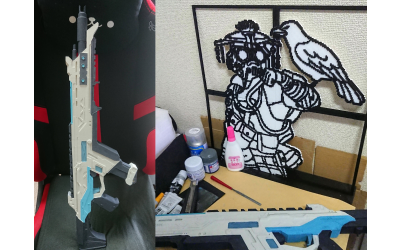
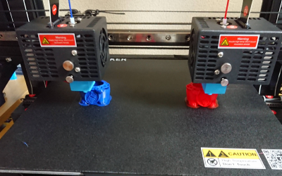
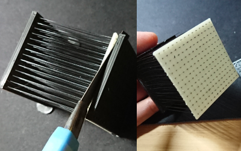
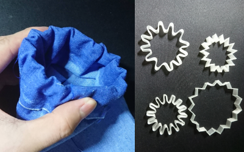
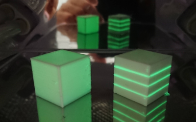
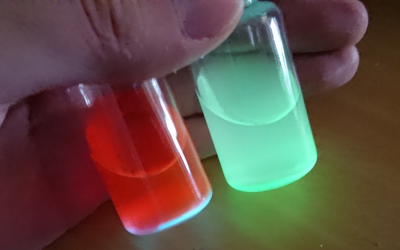
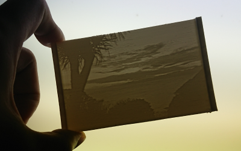

2021年度のまとめ（2022/03/31）
明治大学での助教の4年目が終わりました．
新型肺炎による未曾有の危機どころではないあれやこれやが世を騒がせている今日このごろ，みなさまいかがお過ごしでしょうか．
今年も形式的に1年間のまとめなどを書き連ねておきます．
研究業績 （2021/04～2022/03 のもの）
WISS2021でデモ発表（筆頭）
CHI2022のLBWに採択（共著）
WISS2021で発表した論文（3Dプリントした毛を用いた触覚ディスプレイ）では，対話発表賞を頂戴いたしました．PC委員のみなさんの推薦で選出される賞です．感謝します．久しぶりの現地開催の学会で準備や設営などが少しばかり大変でしたが，やはり作ったものを触って体験していただけるのは，ファブリケーション研究において貴重な機会です．
投稿中の論文としてCHI2022で発表予定のLBWが1件あります（共著）．いつもお世話になっているTexas A&M（HCIED Lab）のJeeeun Kim先生とその研究室の学生さんらによるもので，UIST2020のProgrammable filamentを発展させていただいた研究です．複数の材料をつなぎ合わせることで材料の混合比を変化させ，造形物の性質を変更できないか，といったプロジェクトです．僕はシステム実装やほんのちょっとのコメントをして貢献してます．
また，新しいネタで論文を1本執筆中です．締切が来週に迫って呻いています（毎年この時期はこうなります）．なお，昨年に転がりまわりながら執筆した論文は不採択でした．
そういうわけで，来年度も引き続き研究活動に励んで参ります．共同研究はいつでも歓迎しております．
その他の活動
インタラクション2022のWeb委員長
VR学会論文誌のゲストエディタ(
こちら)
就職活動
2022年度をもって明治大学助教の任期が満了となる予定です．就職活動をします．
何卒よろしくお願いいたします．
無事，次の仕事が決まりましたら，この年イチまとめのような内容をちゃんとした形でまとめられる場所を作ろうかとも思っています．ブログとかこういうテキスト形式のページとか，前時代的で非常にいいんじゃないかな，と．
雑記
日々いろいろなことをやっているのですが，ほぼやった時点で満足してしまって発信できていないです．
その一部を吐き出しておきます．
振り返りながら驚いたのですが，今年は撮影した写真が途中からかなり少なくなっていました．
たぶんGoogleフォトの容量制限ができてから自重気味になったのかもしれません．
ギターをよく練習した
いつぞやに「いずれ動画を撮ってみます」と書いていたので載せておきます．曲名はまあいいでしょう．もうちょっとリズム感を養わないとですね．あとスライドの音がもっさりしがち．ビブラートのピッチも怪しい．練習．

PETGで作るカポは丈夫
ここ最近PETGを使うことが多いです．そのきっかけになったのがこの
カポ．こういうバネ的な構造をPLAで作ると早い段階でヘタってしまうのですが，PETGであれば全く問題ないです．強いて問題があるとすればカポを使う曲を弾かないことですね（気分転換で「鳥の詩」を練習したときに使ったぐらい）．

月姫リメイク
間違いなく2021年度イチのニュース＆作品です．話しだしたら長くなるのでやめますが，敢えて（個人的に）良くなかった点をあげるとすれば，オリジナルにあったなんとも言葉にしづらい物々しさ，伝奇感（？）のようなものがそれほど感じられなかったところです．現代劇っぽさが強く，「月姫ってこんなにわかりやすい作品だっけ？」という印象がありました．あとPS5もついでに購入．今はメルブラをやるために動かしています．正直要りません．

光造形も使います
WISS2021で発表した研究でも部分的に使っていましたが，精度を求めるならやはり光造形です．レジンやパラメータについても少しずつ理解し，ほぼ不自由なく使えています．SLA 3D printer on station．

R-301とか作る
現在のシーズン12まで，それなりにソロダイヤでこなしています．今シーズンは最大のマスターチャンスといわれているようですが，ちょっとやり込む時間がなさそうです（ダイヤでまずまず盛れているんですが...）．ものづくり関係では，ちょっと大きめのR-301を作ったりしていました．あとは適当に拾った二値画像から3Dモデル作って，ちょっと大きめのブラッドハウンドを作ってみたりもしていました．

メインに使用している3Dプリンタの話
JGMaker Artist-D Proです．IDEXという2つのエクストルーダを独立して動かせる（厳密には独立ではない）仕組みが搭載された3Dプリンタで，二色造形や同時造形ができます．動作音がうるさいのでファンを積み替えたいのですが，どうもアクセスしづらいような位置につけられていることだけが不満です．

水溶性樹脂を使ってみる
たまには研究（ボツ）ネタその１．よく作っている毛の間に水溶性の樹脂（PVA）で作ったプレートを挟んでみる．もとから作っている壁の部分とこのPVAの部分の間に少しだけ隙間を作っておくと，毛がカッターで簡単に切り離せます（これまでこの切り離しが結構面倒な作業でした）．
そして，PVA部分を溶かすといい感じに毛先が出てくる！ことはなく，くしゃくしゃっとしてしまいます．まあまあ悪くないと思いますが，もうひと捻り必要なネタです．

形状記憶樹脂を使ってみる
研究（ボツ）ネタその２．形状記憶樹脂（SMP）で星型の形状を作り，一度温めて引き伸ばします．それを袖を模した布に包んで再加熱すると，ゴム紐を通してできるようなひだ（プリーツ？）ができます．
問題は加熱の温度や方法で，いまのところ腕の火傷覚悟で熱風を当てるか，お湯でびっしょびしょにしながら変形させるか，ぐらいの方法しかありません．うーむ．

蓄光樹脂を使ってみる
いまメインに取り組んでいるプロジェクトで使っている蓄光樹脂です．Amazonなどで普通に購入できますが，これがなかなか面白いです．詳しいことはいずれプロジェクトがまとまったときにご報告できるといいのですが，今年度はこれ関係をずっと弄り回していました．

とある粉末材料
こちらも最近やっている内容に関係しそうでしないもの．詳しくは内緒ですが，とある材料をアセトンに溶かすと主成分と着色料が分離しますよ，というやつです．こういうのをやってみると光（と色）の見え方って不思議だな，と思います．

Lithophane
3Dプリンタの作品でしばしば出てくるLithophaneです．場所は江ノ島の「ゆうひ茶屋」の手前をちょっと海側に歩いた展望デッキのようなところから（昨年のまとめに載せていた写真です）．今年はぜひ紫陽花の時期に．
それでは，来年度も頑張らずに済むように頑張りたいのですが，ちょっと冗談抜きに頑張らないといけない気がしています．以上．